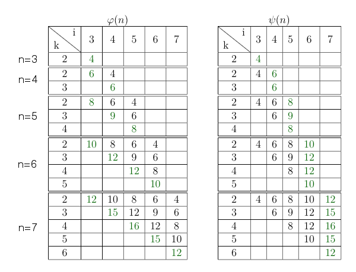
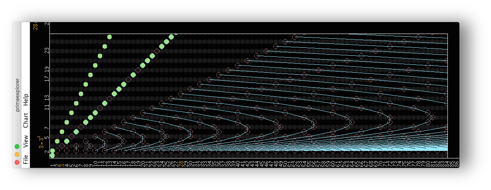
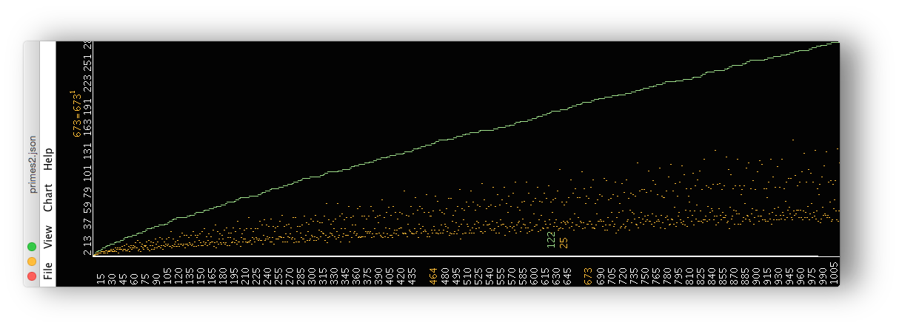
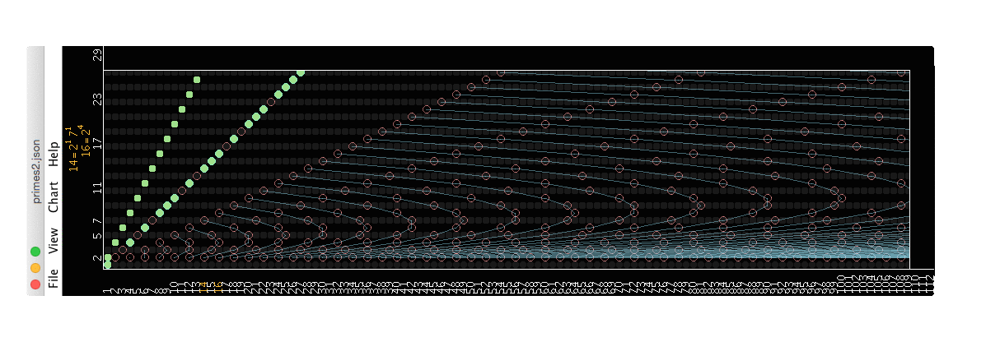

The application gives a visual representation of Goldbach's Conjecture, that every even integer greater than 2 is the sum of two primes. This problem is unsolved since 1742. It combines the multiplicative defined prime numbers with the addition of numbers. The representation of an even integer is not unique, in the most cases there is an increasing number of partitions for an growing n. But it is not monotonically increasing. It could be the case that the primes are in such an arrangement that there is not partition for a (so far unknown) even integer. Computations have shown that there is no such integer below $4 \cdot 10^{18}$.
Just download the project from GitHub and run the build script (.sh on Unix/Linux, .bat on Windows).
Then run primeexplorer.sh or primeexplorer.bat on Windows.
To build and run the application you need the Java SDK.
The sieve of Eratosthenes is an easy method to generate primes.
You simply start at 2, and mark the multiples as composite numbers.
This is repeated with the next number, which was not marked as a composite, i.e. the next prime.
With this algorithm one can specify the prime-counting function as:
$\pi: \mathbb{N} \to \mathbb{N},$
$\pi(n) = \vert \{2,...,n\} \setminus \bigcup\limits_{i = 2}^{n-1} \bigcup\limits_{k = 2}^{n+1-i} i \cdot k \vert$
If you shift the indices, the set of composites, which is substracted from the set $\{2,...,n\}$ could also be written as:
$\bigcup\limits_{i = 2}^{n-1} \bigcup\limits_{k = 2}^{n+1-i} i \cdot k = \bigcup\limits_{i = 3}^{n} \bigcup\limits_{k = 2}^{n+2-i} (i-1) \cdot k = \bigcup\limits_{i = 3}^{n} \bigcup\limits_{k = 2}^{i-1} (n+2-i) \cdot k =: \varphi(n)$
Now consider the next function:
$\bigcup\limits_{i = 3}^{n} \bigcup\limits_{k = 2}^{i-1} (i+1-k) \cdot k =: \psi(n)$
The claim is: $\varphi(n) = \psi(n)$ $\forall n \geq 2$, i.e. the two functions generate the same sets.
$n=3$ ( $\psi(2)$ is an empty set)
$\varphi(3) = \bigcup\limits_{i = 3}^{3} \bigcup\limits_{k = 2}^{i-1} (n+2-i) \cdot k = \{4\} = \bigcup\limits_{i = 3}^{3} \bigcup\limits_{k = 2}^{i-1} (i+1-k) \cdot k = \psi(3)$
$\varphi(n-1) = \bigcup\limits_{i = 3}^{n-1} \bigcup\limits_{k = 2}^{i-1} (n+1-i) \cdot k = \bigcup\limits_{i = 3}^{n-1} \bigcup\limits_{k = 2}^{i-1} (i+1-k) \cdot k = \psi(n-1)$
$n-1 \rightarrow n$
The following tables show the development of the sets of composites for $\varphi(n)$ and $\psi(n)$, starting at $n=3$:
For $\varphi$ the added values are those with the highest value for $k$, for $\psi$ it is just the highest $i$.
So it shows that
$\varphi(n) = \bigcup\limits_{i = 3}^{n} \bigcup\limits_{k = 2}^{i-1} (n+2-i) \cdot k = \varphi(n-1) \cup \bigcup\limits_{i = 3}^{n} (n+2-i) \cdot (i-1) := \varphi(n-1) \cup \varphi'$
and
$\psi(n) = \bigcup\limits_{i = 3}^{n} \bigcup\limits_{k = 2}^{i-1} (i+1-k) \cdot k = \psi(n-1) \cup \bigcup\limits_{k = 2}^{n-1} (n+1-k) \cdot k := \psi(n-1) \cup \psi'$
Now we show that the added sets are equal:
$\varphi' = \bigcup\limits_{i = 3}^{n} (n+2-i) \cdot (i-1) = \bigcup\limits_{i = 2}^{n-1} (n+2-(i+1)) \cdot ((i+1)-1)$
$ = \bigcup\limits_{i = 2}^{n-1} (n+1-i) \cdot i = \bigcup\limits_{k = 2}^{n-1} (n+1-k) \cdot k = \psi'$
$\Rightarrow \varphi(n) = \psi(n)$ $\forall n \geq 2$
$\Box$
We see that all composite numbers can be described by the polynomial $(i+1-k) \cdot k$.
These polynomials are also visible within the application (activate View > Polys to draw the polynomials).
The prime-counting function (Chart > Primes (Calc)):
$\pi: \mathbb{N} \to \mathbb{N},$
$\pi(n) = \vert \{2,...,n\} \setminus \psi(n) \vert$
The following function calculates the number of Goldbach partitions for the even number $2 \cdot n$ (Chart > Partitions (Calc)):
$G: \mathbb{N} \to \mathbb{N},$
$G(n) = \vert \{2,...,n\} \setminus \bigcup\limits_{b = 0}^{1} \bigcup\limits_{i = 3}^{n} \bigcup\limits_{k = 2}^{i-1} n + (-1)^b \cdot (n - (i + 1 - k) \cdot k) \vert$
You can plot these both functions (and other functions from number theory) within the application:
The function $\psi(n)$ could be further generalized to use a constant factor $c \in \mathbb{N}$:
$\psi_c(n) = \bigcup\limits_{j = 2-c}^{1} \bigcup\limits_{i = 3}^{n} \bigcup\limits_{k = 2}^{i-1} c \cdot (i + \frac{j}{c} - k) \cdot k$
The prime-counting function could now be expressed by
$\pi_c: \mathbb{N} \to \mathbb{N},$
$\pi_c(n) = \vert \{2,...,n\} \setminus \psi_c(n) \vert$
You can set the factor c by activating View > Control Mode > Poly Factor and the zoom in/out with Ctrl +/-
And the Goldbach function with a constant factor $c \in \mathbb{N}$:
$G_c: \mathbb{N} \to \mathbb{N},$
$G_c(n) = \vert \{2,...,n\} \setminus \bigcup\limits_{b = 0}^{1} \bigcup\limits_{j = 2-c}^{1} \bigcup\limits_{i = 3}^{n} \bigcup\limits_{k = 2}^{i-1} n + (-1)^b \cdot (n - c \cdot (i + \frac{j}{c} - k) \cdot k) \vert$
It holds that:
$\pi(n) = \pi_c(n)$ $\forall_{n,c \in \mathbb{N}}$
$G(n) = G_c(n)$ $\forall_{n,c \in \mathbb{N}}$